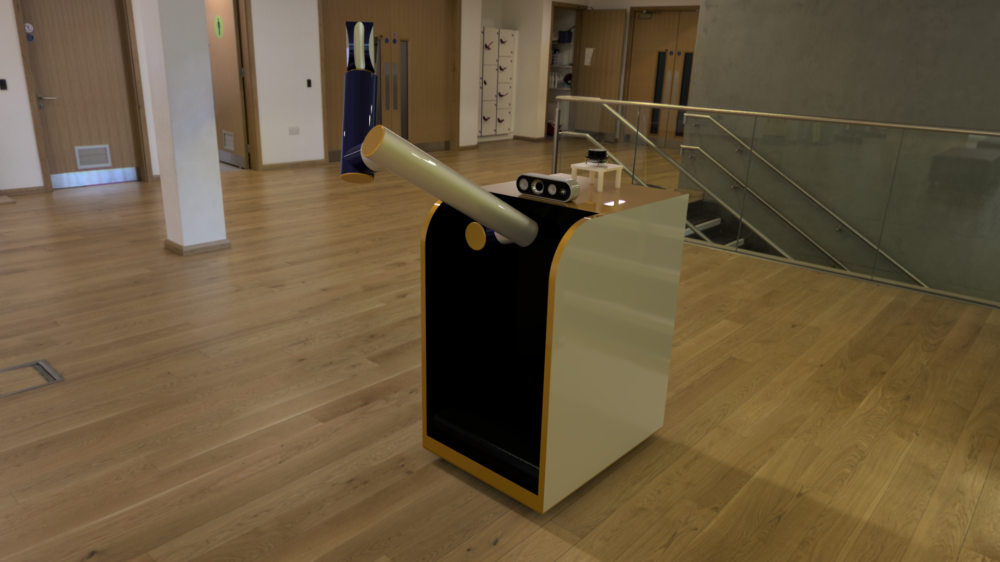
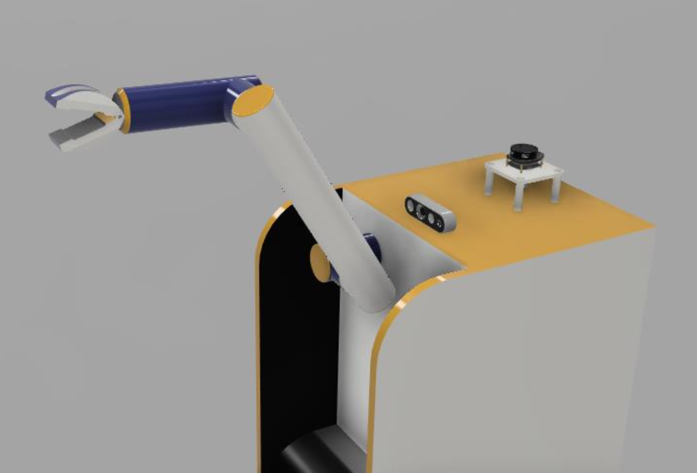
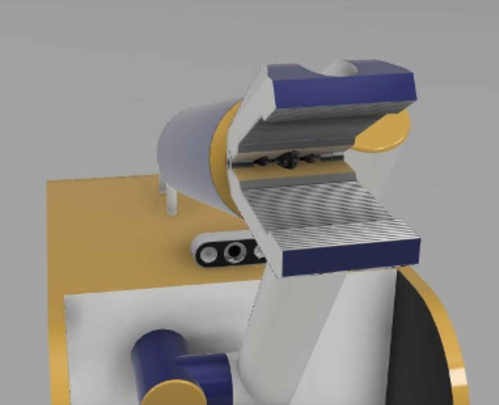
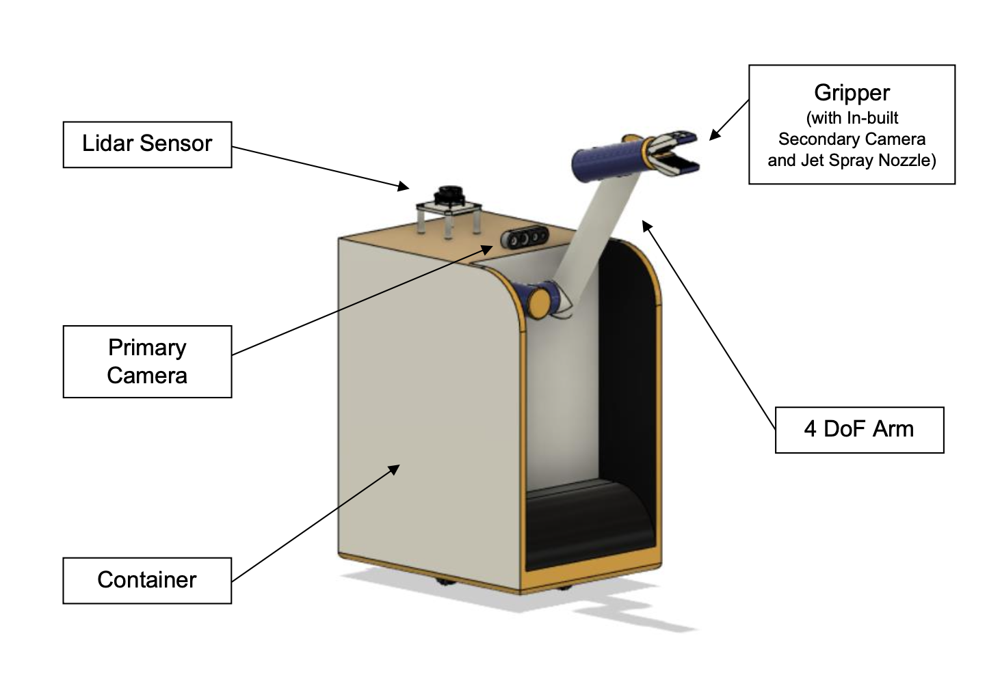

← All work
Autonomous Janitorial Robot.
A ROS-based janitorial robot built for washrooms. It runs Lidar SLAM, TensorFlow object detection, and a 4-DoF arm that dispenses sanitizer.

Competition
ARTPARK Robotics
Challenge 2021
Challenge 2021
Year
2022
Domain
Autonomous Navigation
Service robotics
Service robotics
Stack
ROS · Gazebo · RViz
Lidar · Depth Cam · TensorFlow
Lidar · Depth Cam · TensorFlow
The brief.
I built this janitorial robot for the ARTPARK Robotics Challenge 2021, aimed at washrooms. It carries a multi-compartment tank for water, sanitizing liquid, and waste, plus a 4-DoF robotic arm with a gripper, camera, and jet-spray nozzle to do the cleaning.
Navigation and object detection run on Lidar, depth cameras, and TensorFlow, so the robot can map a room and tell what it is looking at. The robot runs on ROS, with Gazebo for simulation and RViz for visualization.
// recognition: national-level @ ARTPARK Robotics Challenge
Capabilities.
- One chassis carries water, sanitizing liquid, and waste in separate compartments.
- 4-DoF manipulator with a gripper, camera, and built-in jet-spray nozzle.
- Lidar SLAM for indoor mapping and obstacle avoidance.
- Depth camera and TensorFlow object detection so it cleans the right things.
- The full ROS stack, simulated in Gazebo and visualized in RViz.
Demonstration
In simulation.



Up Next